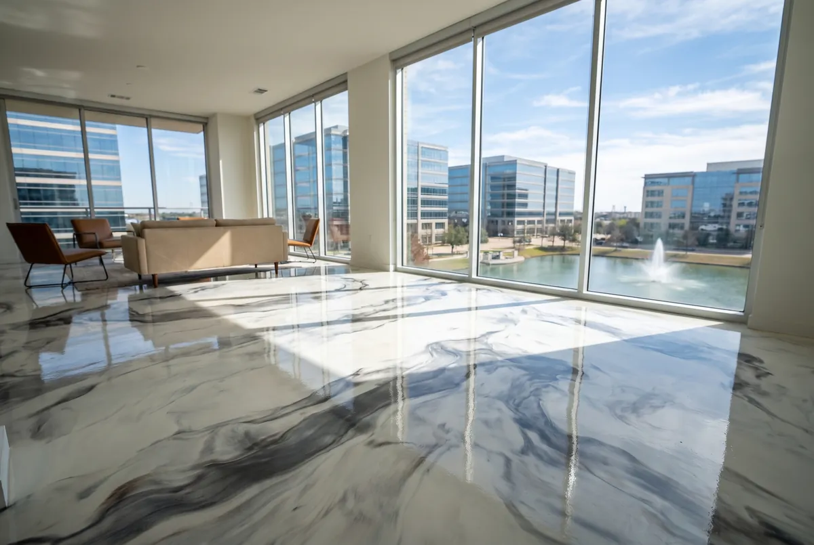

A seamless, marbled floor with real depth, poured and hand-finished on site so no two are alike.
Call (972) 640-6524 for a Free EstimateTell us about your floor and we'll call you back the same working day.
Prefer to talk? Call (972) 640-6524

Metallic epoxy flooring in Irving gives concrete a deep, marbled look that resembles polished stone or flowing water. It suits modern homes, condos around Las Colinas, offices, salons and retail showrooms where the floor is part of the design. Each one is hand-worked on site, so the pattern is unique to your space.
A metallic floor starts with the same grinding and repair as any coating, then a tinted primer coat. The metallic layer is a clear epoxy mixed with fine reflective pigments, poured and moved by hand with rollers and trowels to create the swirls and veining.
After it sets, a clear topcoat adds gloss and wear resistance. Most rooms take two to three days because each layer needs time to cure before the next goes on.
Metallic epoxy fits spaces where people will notice the floor. Common projects include:
The look comes from how the metallic pigment settles and flows while the resin is still wet. Roller direction, the amount of pigment, the base color and even room temperature all change the final pattern.
That's what makes each floor one of a kind. Before we start, we'll agree on colors and the general movement you want, such as a soft marble or a bolder, high-contrast swirl.
Metallic floors take more hands-on time than a flake garage, so labor is a bigger part of the price. Room size, the number of colors, the amount of slab repair and any existing flooring that needs to be removed all play a role.
Indoor floors may also need a moisture test, since a slab-on-grade can push vapor up from the clay below. We'll check everything at a free on-site estimate and quote in writing.
| Metallic epoxy | Polished concrete | |
|---|---|---|
| Look | Marbled, high gloss, custom colors | Natural concrete, satin to high shine |
| Hides slab flaws | Yes, covers patches and stains | No, flaws stay visible |
| Stain resistance | Sealed surface | Needs a guard and periodic reseal |
| Install time | Two to three days | Several days of multi-step grinding |
| Best for | Homes, offices, showrooms | Large commercial floors in good condition |
If your concrete has patches, old adhesive or stains, metallic epoxy will cover them and give you a designer finish. Polished concrete is a good match when the slab is already in very good shape and you want a natural look.
Yes. On a slab-on-grade home, it's a durable, seamless option that's easy to clean and comfortable with area rugs. We test the slab for moisture first, since indoor floors don't breathe the way a garage does.
We remove the tile and thinset and grind down to bare concrete first. Coating directly over tile leaves grout lines that show through and a weak bond.
The clear topcoat protects the metallic layer. Like any glossy floor it can show fine scratches over time, so felt pads under furniture help, and the topcoat can be refreshed later.
Yes. We show you sample boards at the estimate and can blend colors to match cabinets, walls or brand colors for a business.
Call Irving Epoxy Flooring at (972) 640-6524 or send the form at the top of this page. We'll come out, measure and give you a written quote.